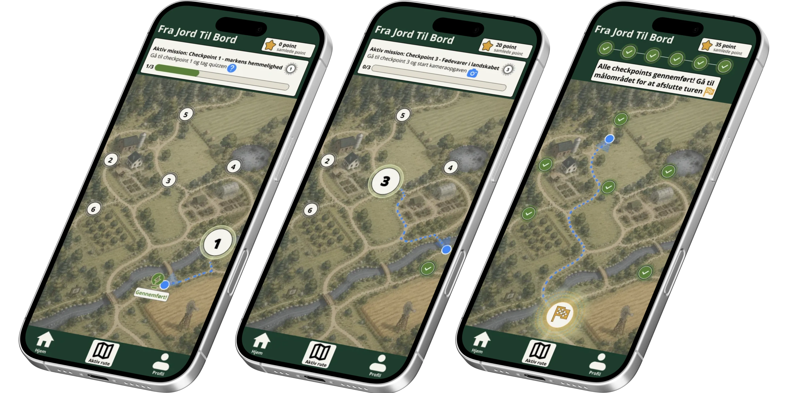
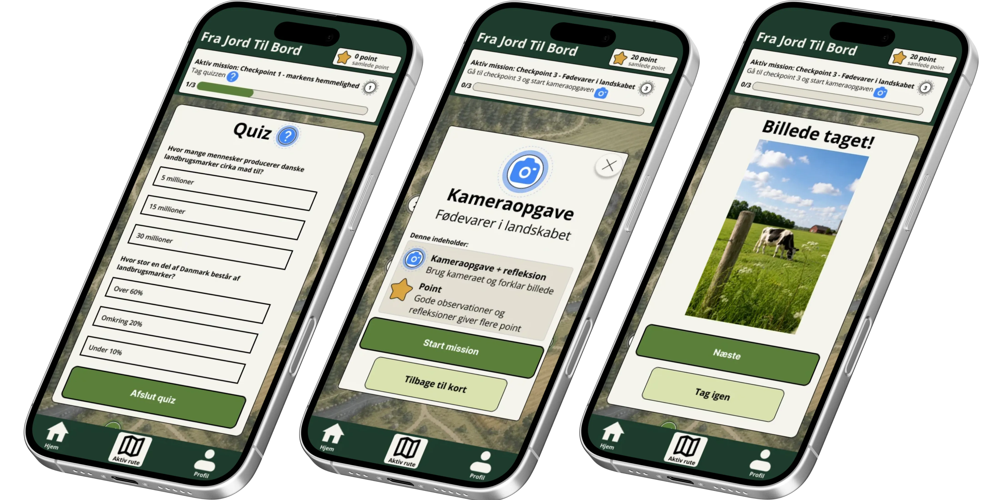
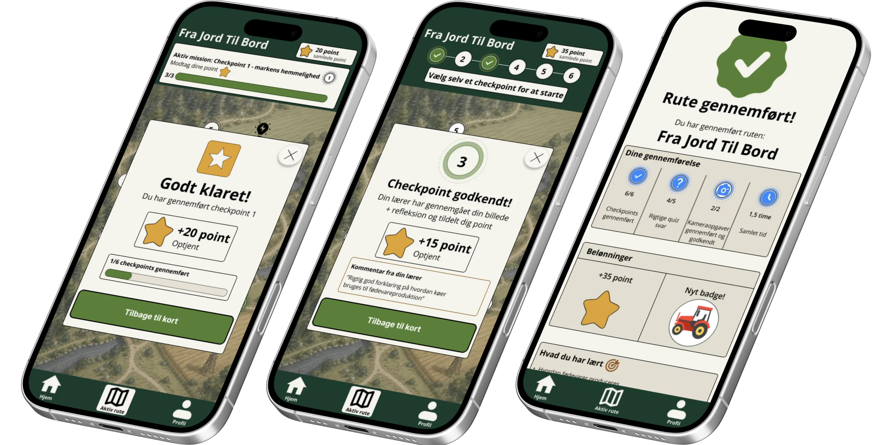

Appens funktioner
Interaktiv læring i praksis
SPOR appen er bygget op omkring funktioner, der gør undervisning om dansk landbrug mere aktiv, visuel og motiverende for skoleelever.
Missioner
Eleverne guides gennem aktive checkpoints
Checkpoints og missioner hjælper eleverne med at bevæge sig gennem ruten og løse små opgaver undervejs. Det gør læringen mere konkret, fordi eleverne skal bruge omgivelserne aktivt.

Quizzer og kamera
Telefonen bruges som læringsværktøj
Quizzer og kameraopgaver gør eleverne aktive i stedet for passive. De kan svare på spørgsmål, tage billeder og dokumentere det, de opdager på ruten.

Progression
Point og badges skaber motivation
Eleverne kan optjene point og se deres fremgang undervejs. Det giver en tydelig følelse af progression og gør oplevelsen mere motiverende.

Prototype
Se hvordan funktionerne hænger sammen
Funktionerne er samlet i et rute-flow, hvor eleverne bliver guidet fra start til slut.
Se prototype